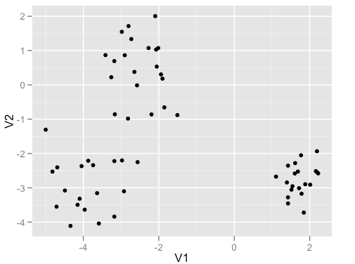

Algoritma K-Means Clustering¶
Apa itu Kmeans Clustering?
K-Means Clustering adalah suatu metode penganalisaan data atau metode Data Mining yang melakukan proses pemodelan tanpa supervisi (unsupervised) dan merupakan salah satu metode yang dapat digunakan untuk membagi sejumlah objek ke dalam partisi-partisi berdasarkan kategori-kategori yang ada dengan melihat titik tengah yang diberikan. Peng-cluster-an objek dilihat dari jarak objek dengan titik tengah yang paling dekat. Setelah mengetahui titik tengah terdekat, objek tersebut akan diklasifikasikan sebagai anggota dari kategori tersebut. Berikut ilustrasi dengan mengambil contoh proses K-Means titik-titi objek pada bidang XY.
Metode K-Means Clustering berusaha mengelompokkan data yang ada ke dalam beberapa kelompok, dimana data dalam satu kelompok mempunyai karakteristik yang sama satu sama lainnya dan mempunyai karakteristik yang berbeda dengan data yang ada di dalam kelompok yang lain.
Metode. K-Means Clustering bertujuan untuk meminimalisasikan objective function yang diset dalam proses clustering dengan cara meminimalkan variasi antar data yang ada di dalam suatu cluster dan memaksimalkan variasi dengan data yang ada di cluster lainnya.

Data clustering menggunakan metode K-Means Clustering ini secara umum dilakukan dengan algoritma dasar sebagai berikut:
-
Tentukan jumlah cluster
-
Alokasikan data ke dalam cluster secara random
-
Hitung centroid/rata-rata dari data yang ada di masing-masing cluster
-
Alokasikan masing-masing data ke centroid/rata-rata terdekat
-
Kembali ke Step 3, apabila masih ada data yang berpindah cluster atau apabila perubahan nilai centroid, ada yang di atas nilai threshold yang ditentukan atau apabila perubahan nilai pada objective function yang digunakan di atas nilai threshold yang ditentukan
Pertama kita akan menghitung centroid. Kita menggunakan rumus E*uclidean Distance* untuk mendapatkan jarak minimum data terhadap centroid. Berikut adalah rumus Euclidian Distance
\mkdocs-material-master\docs\assets\images\knn5.PNG)
Kelebihan k-means
- Mudah dilakukan saat pengimpelementasian dan di jalankan.
- Waktu yang di butuhkan untuk melakukan pembelajaran relatif lebih cepat.
- Sangat fleksibel, adaptasi yang mudah untuk di lakukan
- Sangat umum penggunaannya.
- Menggunakan prinsip yang sederhana dapat di jelaskan dalam non-statistik.
Kekurangan dari k-means:
- Sebelum algoritma di jalankan, titik K diinisialisasikan secara random sehingga pengelompokan data yang di dapatkan bisa berbeda-beda. Namun apabila nilai yang diperoleh acak untuk penginisialisasi kurang baik maka pengelompokan yang didapatkn menjadi tidak optimal.
- Apabila terjebak dalam kasus yang biasanya di sebut dengan curse of dimensionality. Hal ini pun akan terjadi apabila salah satu data untuk melakukan pelatihan mempunyai dimensi yang sangat banyak, sebagai contoh; jika ada data pelatihan yang terdiri dari 2 buah atribut saja maka dimensinya ada 2 dimensi pula, namun akan berbeda jika ada 20 atribut maka akan ada 20 dimensi yang di miliki. Adapun salah satu dari cara kerja algoritma cluster ini ialah untuk mencari jarak terdekat dari antara k titik dangan titik lainnya. Apabila ingin mencari jarak untuk antar titik dari 2 dimensi hal itu masih mudah untuk di lakukan, namun bagaimana dengan 20 buah dimensi hal tersebut akan menjadi lebih sulit untuk di lakukan pencarian jarak.
- Apabila hanya ada terdapat beberapa buah titik sampel data yang ada, maka hal yang mudah untuk melakukan penghitungan dan mencari jarak titik terdekat dengan k titik yang telah di lakukan inisialisasi yang secara acak. Namun jika ada banyak titik data, misalkan satu juta data, maka perhitungan dan pencarian titik terdekat akan sangat membutuhkan waktu yang lama. Proses tersebut dapat dipercepat namun dibutuhkan sebuah struktur data yang lebih rumit seperti kD-tree atau hashing untuk melakukan proses tersebut.
- Adanya penggunaan k buah random, tidak ada jaminan untuk menemukan kumpulan cluster yang optimal.
Untuk Run K-Means dengan python
\mkdocs-material-master\docs\assets\images\kmeans1.PNG)
HASIL

Setelah penerapan rumus dan langkah - langkah diatas diperoleh hasil akhir clustering seperti pada grafik diatas.